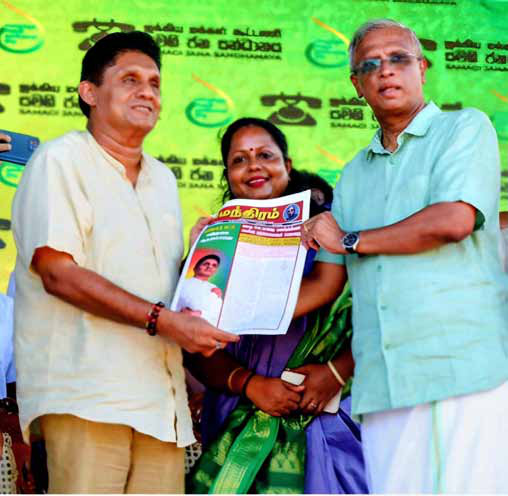
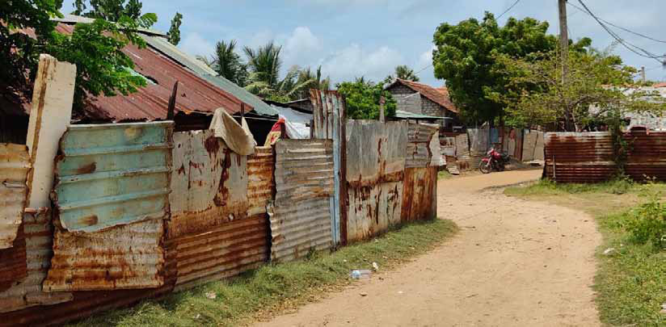
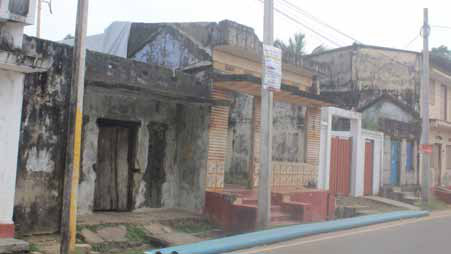

nghJ Ntl;ghsiu fskpwf;fpaik murpaw; jw;nfhiyf;Fr; rkdhdJ
nghJ Ntl;ghsiu fskpwf;fpaik murpaw; jw;nfhiyf;Fr; rkdhdJ
Jaffna Monitor
hellojaffnamonitor@gmail.com
44
Amidst this political comedy of errors,
ITAK's self-proclaimed knight in shining
armour, M.A. Sumanthiran, gallantly
attempted to ride in and save the day. His
grand solution to the mess? Launch a
special edition newspaper to "clarify" ITAK's
position! The paper was edited by a well-
respected Tamil editor from Jaffna—a man
who was already juggling morning and
evening newspapers like a seasoned circus
performer. Word had it that a few thousand
copies of this special edition were printed
and sent out to the farthest reaches of ITAK's
political strongholds.
In an almost theatrical twist, during a
campaign rally in Manipay, Jaffna, attended
by Opposition Leader Sajith Premadasa,
Sumanthiran ceremoniously handed over
the newspaper to Sajith Premadasa, making
quite the show of it. The best part? The
newspaper was distributed free of charge
to the rally-goers as if to ensure that no
one missed out on the latest episode of
Sumanthiran's political soap opera.
Xir 01
ke;jpuk; 01
ts;St Mz;L 2055
Mtzp 30
rdpf;fpoik
15.09.2024
jkpo;j; Njrj;jpd; xUkpj;j Fuy;
md;ghd jkpo; thf;fhsg; ngUkf;fNs!
2009 Mk; Mz;L
rthYf;F cl;gLj;jg;glf;$ba mgha epiyia
ahUk; Vw;gLj;jTk; ,y;iy.
,e;jg; gpd;dzpapy; jkpo; g; nghJ
Ntl;ghsu; xUtiu epWj;jp> mtUf;F jkpo;
kf;fshy; mspf;fg; glf;$ba thf;Ffspy; Mff;
Fiwe;jJ 50 tPj thf;FfshtJ fpilf;fh
tpl;lhy; ,Jtiu vJtpj rthYf;Fk; cl;gLj;jg;
glhJ njhlu;r;rpahf epWtg;gl;bUf;Fk; vkJ mgp
yhirfs; kPjhd kf;fspd; VNfhgpj;j Miz
ahdJ Njitaw;w xU tp\g; guPl;ir %ykhf
,y;yhnjhopf;fg; gLtjw;fhd mghaj;ij ehk;
jw;NghJ vjpu;nfhz;Ls;Nshk; .
,g;gbahdnjhU mghaj;jpw;F Kfk;
nfhLf;f Ntz;ba NjitNa vOe;jpUf;fhj rk
aj;jpy; murpaw; jPu;f;fjuprdk; vJTkw;W jkpo; g;
nghJNtl;ghsu; xUtiug; Nghl;bapl itj;j
ikahdJ murpaw; jw;nfhiyf;Fr; rkdhdJ
MFk; .
jkpo; kf;fspd; gpujhd murpaw; fl;rpahd
,yq;ifj; jkpo; muRf; fl;rpapd; gq;Fgw;Wj
ypd;wp epWj;jg; gl;bUf;Fk; R+o;epiyapy; > jkpo;
nghJNtl;ghsUf;F fUj;jpy; nfhs;sg;gl Kb
ahjsT Fiwthd thf;FfNs fpilf;f
,Ug;gJld; jkpo; kf;fshy; mspf;fg;glf;
$ba thf;Ffspy; 50 tPjj;jw;Ff; Fiwthd
thf;Ffisg; ngWtjd; %yk; jkpo; kf;fsJ
ePz;lfhy murpay; epiyg;ghl;ilj; Njhy;tp
milar; nra;fpd;w nraw;ghNl ,JthFk; .
jkpou; tpNuhj rf;jpfspd; gpd;dzpapy;
,aq;Fk; rpy cjpupf; fl;rpfshYk; Gyk;ngau;
jkpoupd; gz tUifiaf; Fwpitj;J nraw;gLk;
rpy jdpegu;fshYk; jkpo; kf;fspd; murpay;
,Ug;ig vjpu;fhyj;jpy; ,y;yhJ xopf;fpd;w ,r;
nra;wghl;il jkpo; kf;fs; Kw;whfg; Gwf;
fzpg;gjd; %yNk ,j;jifa mghafukhd
R+o;epiyapypUe;J vkJ kf;fs; jk;ikf;
fhg;ghw;wpf; nfhs;s KbAk; . me;jtifapy;
vkJ kf;fisAk; mtu;fsJ murpay; mgp
yhirfisAk; fhg;ghw;w Ntz;ba jiy
aha nghWg;G jkpo; kf;fsJ gpujhd murpay;
fl;rpahd ,yq;ifj; jkpo; muRf; fl;rpiaNa
rhu;e;Js;sJ.
MAjg; Nghuhl;lk; nksdpf;fg;gl;l R+o;
epiyapy; vkJ kf;fspd; thf;Fg; gyNk
mtu;fsJ ifapy; cs;s xNunahU MAjk; .
,e;j thf;Fg; gyj;ij kl;LNk MAjkhf cg
Nahfpj;J vkJ. kf;fSf;fhd murpay; tpbit
ehk; Vw;gLj;j KbAk; . ,j; Nju;jypy; %d;W
gpujhd Ntl;ghsu;fs; Nghl;bapLfpd;w ,r;re;
ju;g;gj;jpy; jkpo; kf;fspd; xd;Wjpuz;l
thf;Fg;gyNk ,j; Nju;jy; KbTfisj;
jPu;khdpf;Fk; mstpw;F kpfg; ngWkjp kpf;fjhf
khwpAs;sJ. kpfTk; tPupakhd ,t;thf;Fg;
gyj;ij jPu;khdk; kpf;fJk; gpuNahrdkhdJ
khd Kiwapy; cgNahfpf;f kWg;gNjh my;yJ
rpjwbj;J tPz;tpuak; nra;tNjh tpNtfkw;w
murpaw; nraw;ghlhFk; .
Mifahy;
Nju;jiy
gfp\;fupg;
gijNah my;yJ ve;jtpjkhd murpaw; jPu;
khdj;jpw;Fk; toptFf;fhj jkpo;g; nghJ
Ntl;ghsu; Nghd;w ntw;W czu;r;rpf; Nfhrq;
fshy; ce;jg;gl;L gyk; kpf;f thf;Ffisr;
rpjwbj;J tpuak; nra;tijNah Kw;whff;
iftpl;L vkJ murpay; epiyg;ghl;il Nehf;fp
nghJ Ntl;ghsiu fskpwf;fpaik
murpaw; jw;nfhiyf;Fr; rkdhdJ
jkpouRf; fl;rp kj;jpa FOTf;F
Rke;jpud; vk;.gp. tpsf;f mwpf;if
jkpo;g; nghJ Ntl;ghsiu ,e;j [dhjpgjpj; Nju;jypy; fskpwf;
fpaik murpaw; jw;nfhiyf;Fr; rkdhdJ vd;W jkpo; kf;fSf;F
tpsf;Fk; tpjj;jpy; jkpouRf; fl;rpapd; kj;jpa FOTf;F vk;.V.
Rke;jpud; vk;.gp. mwpf;if rku;g;gpj;jpUf;fpd;whu;.
[dhjpgjpj; Nju;jy; - 2024 I xl;b mf;fl;rpf;Fr; rku;g;gpj;j mwpf;
ifapy; ,t;tplak; tpsq;fg;gLj;jg;gl;bUf;fpd;wJ. me;j mwpf;if
apd; KO tptuk; tUkhW -
( 04Mk; gf;fk; ghu;f;f )
gf;fq;fs; - 12

Jaffna Monitor hellojaffnamonitor@gmail.com 45 The articles in the newspaper included pieces such as "Why ITAK Supports Sajith," "Why Ranil Must Be Defeated," and "The Tamil Common Candidate: A Political Suicide." But here's where the whole thing took a hilariously bizarre turn. Instead of a title that evoked unity or political gravitas, the newspaper was called… wait for it… Sumanthiram. Yes, Sumanthiran named the entire paper after himself. And if that wasn't narcissistic enough, the logo featured none other than a smiling caricature of Sumanthiran himself, as if to say, "Look at me! I'm the solution!" The moment the newspaper hit the streets, it was like handing out punchlines instead of political guidance. Instead of clarifying ITAK's position, the whole exercise became the punchline of every political joke in town. Supporters didn't know whether to laugh or cry. Questions started flying: "If they really wanted clarity, why didn't they just reprint the now- defunct Suthanthiran, ITAK's official newspaper? Why the need for such self-glorification?" Instead of rallying ITAK's confused base, Sumanthiram blew up in Sumanthiran's face like a botched magic trick. Voters, already worn out by the party's endless clown show, took one look at the newspaper and saw it for what it was—a shiny, oversized tribute to Sumanthiran's ego. According to sources, a few disillusioned supporters, lost in a fog of political despair, ended up voting for Sangu (the conch), the symbol of the common Tamil candidate. The punchline? This was the very candidate Sumanthiran had passionately warned everyone not to support. Rather than rescuing ITAK from the edge of disaster, Sumanthiram turned the party's crisis into a full- blown political comedy of Shakespearean proportions. What started as an attempt to "clarify" ITAK's stance quickly spiraled into an unintentional farce, revealing Sumanthiran's ego to be as inflated as a hot air balloon, while his and the party's credibility plummeted faster than the newspaper circulation. The election may be long over, but the legend of Sumanthiram—the paper, not the man— still lives on as one of the most jaw-dropping spectacles in the grand circus of Tamil political theatre.

Jaffna Monitor hellojaffnamonitor@gmail.com 46 M ore than three decades after their forced eviction from the Northern Province, thousands of Muslim families who returned to their ancestral lands in Jaffna still face an uncertain future, living in temporary shelters without permanent homes or basic amenities. Despite their hopes of resettling, these families remain trapped in a cycle of hardship, with little progress made on housing or land allocation. In a poignant reflection of their ongoing struggles, Sharmina Sahabdeen, a third-gener ation Muslim originally from Pommaiveli near Jaffna, recounted her return to Jaffna on September 16, 2002, with optimism. "We came back with immeasurable joy, thinking we were finally returning home. But 22 years later, we still don't have permanent land or homes. Our lives are confined to temporary tin-roofed shacks," she said. Jaffna Muslims Struggle Decades After Displacement Article Mirage of Resettlement: BY: R.Ram

Jaffna Monitor hellojaffnamonitor@gmail.com 47 Sharmina is one of many who returned to their ancestral land only to find themselves living in makeshift homes with no access to basic infrastructure. "Our daily life revolves around public toilets, community wells, and water supply limited to just an hour a day. The heat inside the shacks is unbearable in the dry season, and during the rainy season, we deal with waist-deep floods," she explained. Her story is not unique. Sharmina also shared the tragic story of losing her mother during the floods. "When the floods hit last time, my mother fell ill and contracted an infection, according to the doctors. Despite treatments, she passed away," she said tearfully. 16 Years On, Still No Permanent Homes Katheeja, another returnee, spoke of her family's displacement during the 1990 eviction and their subsequent struggle to resettle. "We were expelled from Jaffna and went to Puttalam. We returned to Jaffna 16 years ago, but we still haven't been able to identify land or obtain the necessary documents. That's why we're still living in these temporary huts," she said. Though many families have returned, they continue to face bureaucratic challenges in securing land. "We manage in these huts, but our children suffer the most. Their education is constantly disrupted by the floods. Our time may have passed, but for our children's future, education is the key. Yet, the environment doesn't allow them to study properly," she added, expressing her frustration. Despite returning more than 15 years ago, 278 families remain unable to build permanent homes or benefit from government housing schemes. They reside in rented houses in and around Jaffna, while others, without opportunities to construct homes, have relocated elsewhere in the country. Historical Displacement and Unfulfilled Promises The expulsion of Muslims from the Northern Province in October 1990 remains one of the darkest chapters in the region's history. Over a two-week period, the Liberation Tigers of Tamil Eelam (LTTE) forced out approximately 14,400 Muslim families (about 5% of the province's population) from their homes. Families left behind their properties and belongings, fleeing with just 500 rupees and

Jaffna Monitor hellojaffnamonitor@gmail.com 48 the clothes on their backs, as they crossed the boundaries of the Northern Province. Many of these displaced families are scattered across the country, with some settling in areas such as Puttalam, Negombo, and Panadura. Only a few sought refuge abroad. Despite returning to their homeland, many of these families still struggle to secure permanent resettlement and housing. The issue is compounded by bureaucratic hurdles and the lack of adequate land allocation. "When we were displaced in 1990, there were 3,500 families. Now, our numbers have grown to 15,000. Yet, only about 1,000 families have returned, and just 250 families have received housing schemes. What happened to the rest of us?" asked a young man from the resettled community in Pommaiveli, who requested anonymity. Continued Hardships While 278 families continue to live in rented houses without their own land, others, despite owning ancestral land, cannot build homes due to building regulations. Urban Development Authority rules require at least six and a half perches of land to construct a house, but many Muslim families have less than this, and thus cannot build homes for their growing families. The situation is dire for younger generations, who find themselves living in overcrowded conditions with no prospect of housing support. Many families now face the possibility of being displaced once again, as they lack the resources to improve their living conditions. Calls for Action Muslim community leaders and activists have been calling for more robust action from the government to address these issues. The Muslim Peace Secretariat has put forward an 11-point proposal, urging the government to expedite resettlement efforts and provide necessary housing and land support to displaced Muslims. Some of the key demands include: The establishment of a Presidential Commission to investigate the forced eviction of Muslims in 1990 and recommend necessary reparations. Prioritizing housing assistance for the displaced Muslim community. Ensuring that displaced Muslims retain ownership of their ancestral lands. Increasing compensation for those affected by the 1990 expulsion. Despite these demands being put forward two years ago, there has been little progress in implementing the proposals, leaving the displaced community in limbo. A Bleak Future Human rights activist Shreen Saroor highlighted the failures in the resettlement process, stating, "Resettlement is seen as a favor, not as a right. For years, the resettlement of Muslims has been delayed due to issues related to land ownership. It took nearly ten years to establish an office for displaced Muslims in Puttalam. Despite multiple housing schemes, such as the 50,000 Indian Housing Project, strict eligibility criteria have left many affected families without access to these resources." As more than 1,490 families express their desire to return to Jaffna, the government faces increasing pressure to address the land and housing crisis for the displaced Muslim population. Yet, without substantial action, the long-held dream of resettlement remains a mirage for many.